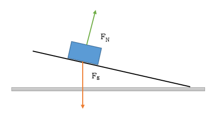

A block sliding down a frictionless plane will be acted on by its gravitational force and a normal force caused by the ramp. The net force will be the component of the weight acting parallel to the ramp:
where m is the mass of the block, g is the gravitational constant; θ is the angle of the ramp, and a is the acceleration of the block.

If friction between the block and ramp is included in the model, then an additional force parallel to the ramp will be added to the free body diagram and now:
where Ff is the frictional force. If the block is at rest on the ramp, then static friction will equal the x-component of the weight. If the block is sliding down the ramp, then kinetic friction can be calculated as a coefficient of friction multiplied by the normal force. Since the frictional force always opposes motion, the acceleration of the block will always be less than the acceleration of the frictionless case.
However, if we replace the block with a rolling object such as a ring, disc or cylinder, we now have a more complicated situation. In the first two cases, we were able to treat the block as a point-like mass; but with the addition of rotation, we must consider motion in two dimensions.
The following figure shows the dynamics of the rolling object. For simplicity, we will assume the object is a disc. There are three forces acting on the disc: the gravitational force, Fg, in red; the normal force of the ramp, Fn, in green; and a static friction force, Fs, in yellow. The normal and friction forces act on a single point where the disc touches the ramp, and it is the friction force that causes the disc to rotate.

The static friction force is still retarding the progress of the disc down the ramp, so the translational motion of the disc is
The rotational form of Newton's second law about the center of the disc,
can be expressed in terms of the system's parameters
where r is the radius of the disc; φ is the angle between the radius and force, the moment of inertia, I, is half the product of the disc's mass and the square of the radius, and α is the angular acceleration. The angle φ is 90 degrees because a tangent to a circle is always perpendicular to the radius.
There are three unknowns in these equations: static friction, translational acceleration and angular acceleration. However, the relationship between the translational acceleration of the disc and its angular acceleration is
Therefore it is possible to uniquely solve for the three unknowns with these three equations. Substituting for the angular acceleration in terms of the translational acceleration and eliminating Fs from the equations results in:
or
and
The value of the angular acceleration can now be found using the rotational form of the second law or the relationship between the accelerations.
In this experiment, we analyze the motion of a cylinder rolling down a ramp from three perspectives: a dynamics approach; from the principle of energy conservation; and from the principle of momentum conservation. The main purpose of the lab is to practice making calculations associated with rotational mechanics. The different analyses will include the measurement or calculation of time and distance; mass and moment of inertia; acceleration and angular acceleration; velocity and angular velocity; force and torque; and impulse and angular momentum.
Record all the indicated quantities on the Report Sheet based on the following procedure.
Set up the ramp at an angle around 20 degrees. Find the mass and diameter of any canned grocery item filled with its contents. The mass of the can and contents may be printed on the label (typically 453 g) or a spring scale may be used to find the weight.
Set the can at a certain height on the ramp; mark the height for repeated trials. Record the height and the distance from that point to the bottom of the ramp on the Report Sheet.
Measure the time it takes the rolling can starting from rest to reach the bottom of the ramp. In a separate trial, measure the time it takes the can to roll a certain distance across the level surface. A distance or 50 or 100 cm should be appropriate. (It may be helpful to review the experiment, Uniform and Accelerated Motion, where you did these calculations.)
If the can is rolling too fast for accurate results, lower the angle of the ramp or start from a lower point on the ramp. Also consider averaging the measurements from multiple trials of both actions for more accurate results.
| Parameter | Symbol | Measurement | SI Value |
| Disc mass | m | 53 g | 0.053 kg |
| Disc diameter | d | 9.0 cm | 0.09 m |
| Disc radius | r | 4.5 cm | 0.045 m |
| Vertical height at release | h | 10.0 cm | 0.10 m |
| Ramp length | R | 84 cm | 0.84 m |
| Time down ramp (from video) | Δt1 | 1.48 sec | 1.48 sec |
| Distance across table | Δx | 107 cm | 1.07 m |
| Time across table (from video) | Δt2 | 0.96 sec | 0.96 sec |
Use consistent units of kg, m and sec for all calculations!
Calculate the translational acceleration on the ramp from the relationship: a = 2R/Δt12 where R is the distance on the ramp and Δt1 is the time it took to travel that distance.
Calculate the translational speed at the bottom of the ramp from the relationship:
Calculate the static friction force from the relationship:
where h is the vertical height and R is the length of the ramp from the level surface to the point where the height was measured.
| Quantity | Formula | SI Value |
| acceleration | 2R/t12 | 0.77 m/s2 |
| velocity | Δx/Δt2 | 1.1 m/s |
| friction force | ⅓ m g (h/R) | 0.021 N |
Calculate the torque acting on the can while it was on the ramp using the formula in the Introduction.
Calculate the moment of inertia of the can using the formula in the introduction.
Use the rotational version of the second law of motion to calculate the angular acceleration of the can. Then use the relationship between translational and rotational acceleration to determine the translational acceleration of the can on the ramp.
| Quantity | Formula | SI Value |
| torque | Fr | 9.5 x 10-4 N-m2 |
| moment of inertia | ½mr2 | 5.4 x 10-5 kg-m2 |
| angular acceleration | Τ/I | 18 rad/s2 |
Identify all the energies at the top of the ramp where the can was at rest and at the bottom of the ramp right before it began rolling across the level surface. Set up an equation based on the principle of conservation of energy.
Write a second version of the equation that includes the measurable quantities needed to calculate each type of energy.
Use the relationship between translational and rotational velocity, ω = v/r, to calculate the expected speed of the can, v, and the bottom of the ramp.
Gravitational potential energy is converted into translational kinetic energy and rotational kinetic energy:
mgh = ½ m v2 + ½ I ω2
Using the relations between v and ω and the parameters of this system, the speed at the bottom of the ramp should be 1.15 m/s.
Use the definition of impulse for rotational motion to calculate the impulse of the can from the point of rest at the top of the ramp until it reaches the base of the ramp.
Next, use the principle of angular momentum conservation to calculate the change in angular momentum of the can. Since the initial angular momentum of the can at rest was zero, this value is also the final angular momentum of the can at the bottom of the ramp. Use the definition of angular momentum to determine the angular velocity of the can at the bottom of the ramp, and from that, the translational speed of the can.
Impulse is the product of torque and time:
J = Τ Δt1 = (9.5 x 10-4)(1.48) = 1.4 x 10-3 N-s.
This is also the final angular momentum of the can at the bottom of the ramp. Solving for the final angular velocity:
ωf = J/I = 1.4 x 10-3/ 5.4 x 10-5 = 26 rad/sec,
and therefore vf = ωf r = 1.17 m/s.
The predicted acceleration on the ramp was 0.81 m/s2 and the experimental value was 0.77 m/s2, which is 5% error.
The predicted velocity from energy conservation was 1.15 m/s and the experimental value was 1.1 m/s, which is 5% error.
The predicted velocity from momentum conservation was 1.17 m/s and the experimental value was 1.1 m/s, which is also 5% error.
Submit your completed lab report sheet to the Lesson 11 Lab: The Rolling Can assignment folder.
Note: your lab report sheet should be completed by hand. You will need to scan and upload the completed document to the assignment folder.